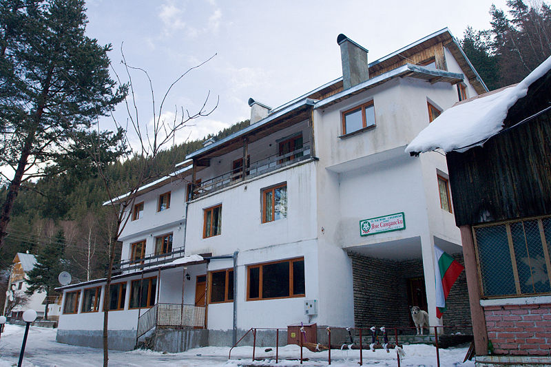

Кобилска планина и в. Бели КамъкРазгледай
Този маршрут ще ни отведе в планинската област Краище до една от малко посещаваните български планини - Кобилска. Планината е разположена на българо- сръбската граница. За да придобием представа за особеностите на планината ще посетим уникални малки карстови езера, разположени върху връх! Маршрутът ще ни отведе до най-високата точка на доскоро непознатият в планинарските среди първенец връх Бели камък (1362 м).

Банско - хижа Демяница – хижа Беговица - хижа Яне СанданскиРазгледай
Продължителността на маршрута е 11 часа. Изходен пункт е входа на Национален парк Пирин. Следвате синята маркировка. Тръгвате в посока към разклона за хлораторното отделение на ВиК, минавате над почивна станция Пирин и хижа Рай. След Латата на разклона при трансформатора на почивния дом, поемате към разклона за местността Тодорова орница. Поемате по отбивката за пряката пътека над Тодорова орница. По тази пътека стигате до Юленския мост. Продължавате да следите синята маркировка и стигате над местността Главите, на завоя тръгвате по отбивката за пряката пътека към хижа Демяница. Стигайки до хижата може да направите малка почивка и да продължите към разклона за Валявишките езера. Следвайки маркировката, по разклона за Валявица продължавате прехода напред към местността Тияците (представлява няколко поляни с внушителни челни морени образувани при отстъпването на някогашния Демянишки ледник). От Тияците тръгвате към разклона за Превалските езера (Демянишки езера). След това поемате към седловината Мозговишката порта и Беговишката порта за да стигнете до разклона за хижа Пирин. От него продължавате до хижа Беговица и от там до последната точка на прехода - хижа Яне Сандански.
хижа Вихрен - хижа ДемяницаРазгледай
Изходен пункт за маршрута е хижа Вихрен, която се намира се на левия бряг на река Бъндерица. Надморската височина е 1950м. По време на прехода следете зелената маркировка. Продължавате до разклоните за Равнако и за Дългото езеро. По този път стигате до разклона за Василяшките езера, които се намират над хижа Демяница. Продължавайки надолу пресичате реката, която идва от Василишките езера и стигате до хижа Демяница. Продължителността на прехода е 4 часа.
Рилски манастир - рида Баучер - хижа Иван Вазов Разгледай
Изходен пункт на маршрута е западния вход на Рилския манастир, точно пред голямата карта на маркировката в района. Може да стигнете с автобус от Дупница. Широка алея навлиза в гората. Вдясно е гробът на Джеймс Баучер. Алеята има съвсем плавен наклон и продължава около 45 минути из гората. На няколко места вляво и вдясно се отделят подобни пътеки, затова трябва да следите маркировката - червена и жълта. Ще стигнете до маркировъчен кол, откъдето пътеката рязко извива надясно и започва стръмно изкачване. При кола се разкрива красива гледка към долините на Рилска и Илийна река. Пресичат се няколко полянки и след около 30 минути гората свършва. Билото на рида Баучър се очертава все по-ясно. На около 3 часа ходене от Рилския манастир се стига до заравненост, където лятото има кошари. От това място лятната пътека се отбива наляво (НЕ е подходяща през зимата), а коловете продължават нагоре по самото било. Редуват се стръмни изкачвания с леки спускания. Трябва да следите коловете и ръба на рида. След около час и половина коловете продължават вдясно от досегашната посока на движение и започва подсичане почти по хоризонтала. Постепенно се слиза в горната част на долината на река Друшлявица - голямата заравненост Топилата. Ще стигнете до разклон - надясно е пътят за основното било и хижа Мальовица, а напред (северозапад) за хижа Иван Вазов.
В. Търново – Гарга баир – село Арбанаси – В. ТърновоРазгледай
При тази обиколка изходната точка е квартал "Асенов". От него туристическата пътека се изкачва на хълма Гарга баир, под скалния венец, на който криволичи шосето за село Арбанаси и град Горна Оряховица. Самият хълм е с над 100 метра по-висок от хълмовете Царевец и Трапезица, поради което от него се открива изключително красива панорамна гледка към старата част на Велико Търново. От Гарга баир се влиза в село Арбанаси, където могат да се разгледат част от неговите забележителности. От селото се продължава по маркирана пътека на юг, която води до асфалтовия път за местността Ксилифор. По този път се достига до квартал "Мавриков", а от там и до изходният пункт на обиколката в квартал "Асенов".

хижа Персенк – летовище Бяла ЧеркваРазгледай
За изкачването му се поема вдясно по стръмната пътечка, която след 10 минути извежда до висока скала. Пътеката свива вдясно и стръмно поема нагоре. След 8 минути се стига до върха. Разкрива се най-близката и красива гледка към Персенците и Модър на изток и Баташки Снежник на запад. По тясна пътечка, спускаща се на север се слиза на пътя, по който се достига седловина Митницата. Получила е името си от митническия пропускателен пункт, който е имало тук до 1912г. От хижа Персенк до седловината се стига за 45 минути, ако не се изкачва връх Червен. По пътя, на север се стига до Прангов чучур – поляна с чешма. Продължава се нагоре до седловината Хаджийца. Оттук по пътя след 4 кмилометра се стига до село Лилково. От седловината на североизток поема маркирана пътека, която подсича връх Св. Илия (1705м.), излиза на поляните между местност Св. Атанас и карстовия рид Кукулек, изкачва се на рида, свива по билото му на изток и стига до чешма. От нея се продължава по пътеката на североизток. Стига се до стар горски път, който извежда до местността Емерлийца. Разкрива се гледка към Персенците. Пътеката минава криволичейки през гора, подсича връх Кюмюрлютепе откъм изток и слиза в североизточната част на местност Башмандра. Тя представлява обширна поляна, обкръжена с вековна иглолистна гора. През нея лъкатуши малка рекичка. Оттук пътеката върви на изток, обикаля връх Преспа (1584м.) откъм изтчната страна и се спуска до пътя, свързващ летовище Бяла черква с местността Черешка. Поема се на север по него, изкачва се седлото между върховете Преспа и Бяла Черква и след 10 минути се стига до летовище Бяла черква.
Сапарева баня – Паничище – Седемте рилски езераРазгледай
Изходен пункт на маршрута е Сапарева баня, докъдето се стига с автобус от Дупница. От центъра на града тръгва пътека за Паничище – 2 часа ходене по дъното на долина. Пътеката за Седемте рилски езера, хижа Скакавица и хижа Пионерска тръгва вляво, зад посетителския център. Маркировката е много добра. Почти по равно навлизате в иглолистна гора. Ще излезете на черен път, по който надясно се стига за около 10 минути в долния край на пистата на Паничище. Оттам се продължава наляво по асфалтов път, като след около километър вдясно се отклонява пряка пътека. Излиза се отново на пътя и след 15 минути вървене по него тръгвате надясно по стръмна туристическа пътека. Всички разклони са маркирани. Излиза се в местността Зелени преслап (на около 45 минути от Паничище). Маршрутът продължава надясно и нагоре по хубав черен път. Стига се до мочурливо място с табелка за вход в резерват Скакавица. Наляво се отделя пътека за хижа Пионерска. Продължавате напред по пътя. След около 200 метра вдясно се отделя друга пътека - за хижа Скакавица. Подминавате разклона и започвате плавно изкачване по черния път през гората. След около 1 час, по пътя вляво, отново се отделя пътека за хижа Пионерска. Малко след това пътят завива рязко надясно и изведнъж става по-стръмен. Гората постепенно преминава в клек, а маркировката става колове с азимутни табелки. Изкачването продължава стръмно почти право на юг (при мъгла и дъжд се следят азимутите). Излиза се от клека и веднага се вижда хижа Рилски езера.
Бачковски манастир – хижа МарциганицаРазгледай
Тръгва се от входа на Бачковски манастир на изток, минава се край костницата и се стига до долина с красиви поляни, обградени със стръмни, почти отвесни склонове. Тук се намира Аязмото. След 20 минути се стига до няколко черковни постройки и малка църква. Горе високо с е вижда отвесния скат на Червената стена. Върви се нагоре по дола, който на места се стеснява до 2 метра. След 40 минути долът се изоставя и започва стръмно серпентинно изкачване. Стига се до местността Селище - открита наклонена поляна. От тук до хижа Марциганица се отива по маркировка от железни стълбове, идващи от хижа Безово.